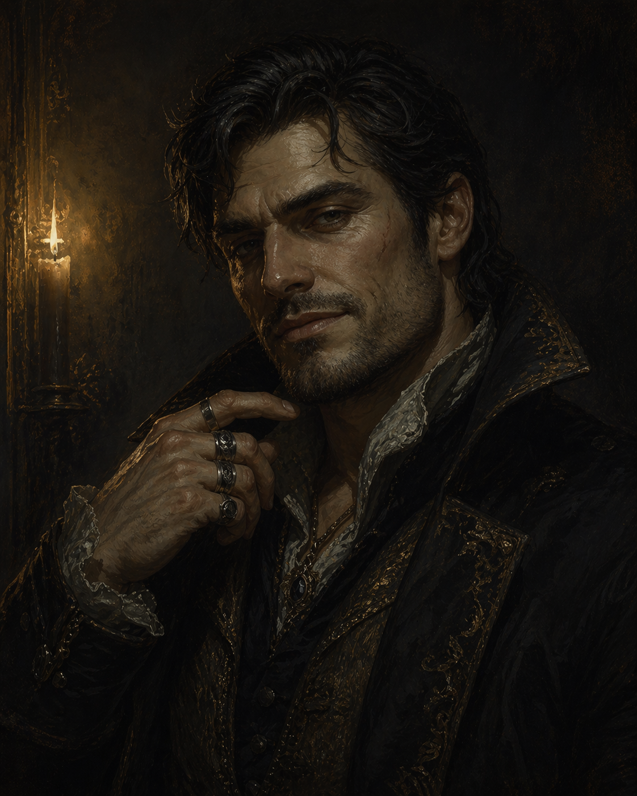

Alaric Dalmorrian � "Cutter"
Got into this for the thrill. The stakes had other ideas. His family name keeps coming up in places it has no business being.
Reference: Noble Houses ?
Player: Andrew
Story Abilities
- Dalmorrian Blood — You automatically succeed on challenges that respond to your bloodline: warded doors keyed to your line, compact seals that recognize Dalmorrian descent, anywhere your lineage is the key factor rather than your skill. Additionally, the Reliquary’s script — which you couldn’t fully read in the sanctum — has begun appearing in your dreams in a language you can read. Ancient Akorosi compact notation. You cannot stop it. You are starting to understand what it says.
- The Name Means Something — Once per session, invoke the Dalmorrian name in a context where it carries weight (Brightstone gatherings, dealings with anyone who knows old noble or compact history). Ask the GM: does this person know what that name means? If yes, you have significantly better positioning in the conversation — access or concessions others couldn’t get.
Background
- Full name: Alaric Dalmorrian � street name "Cutter"
- Akorosi descent � Noble background
- Noble family, House Dalmorrian � house colors Gold and Green
- Father: Schieven Dalmorrian � head of the family and the old money
- Far down the hereditary line � multiple older brothers and sisters; received little parental attention
- Social manipulator; the crew's primary face and negotiator
- Currently under suspicion by House Valchek � Marla Vale is a specific threat
Vice � Luxury
When the crew work is done, Alaric simply goes home and enjoys the posh life � the comfort, the quiet, the things his name still affords him. Not escapism, not excess. Just the one version of himself that doesn't need to be performing.
Schieven and his wife are the source. The estate, the staff, the fine things � all still available to him. The relationship is formal and distant, but the door is open. He does not let them see what he does in the dark.
Friend & Foe
A tavern owner in Brightstone. Older, warm, and entirely unimpressed by the Dalmorrian name � which is exactly why Alaric keeps coming back. She is the closest thing he has to a mother figure: someone who has time for him, asks no questions about where he's been, and tells him the truth when he needs it. When she noticed Alaric starting to look into the occult and worried he'd go astray, she introduced him to Lady Crane � someone she trusted to give him better footing.
Jared's bastard son. Has been in and out of trouble with the law. Resents Alaric bitterly � for the noble name, the easy life, the father who actually ran the house. Sees in Alaric everything he should have had. Alaric is not aware of this animosity.
What the Crew Has Heard
- Has never been seen with his parents outside of formal functions.
- Can secure good deals for purchasing quality boats.
- Killed a notorious pistol duelist in a duel.
Character Sheet
?????????
| Level 1 | Disquiet | Heeded the Call |
| Level 2 | � | � |
| Level 3 | � | |
- Rook's Gambit � Take 2 stress to roll your best action rating while performing a different action.
- Ghost Voice � You can speak with ghosts and understand their communications.
| Hunt | ???? | Insight |
| Command | ???? | Resolve |
| Consort | ???? | Resolve |
| Sway | ???? | Resolve |
The Compact Connection
On the ghost train, something in the Reliquary Car caught his attention � one of the seals etched into the Ledger looked strangely familiar. Not unmistakably his family's crest, but close. Something about the shape, the proportion. He hasn't fully placed it yet. He knows his family name keeps appearing in these old records � tied to Something Below somehow, though the shape of it hasn't clicked yet.
The second intact seal adjacent to his family's is Jared's line. His uncle's blood is wired into the harbor compact. Setarra intends to use Jared as the mortal intermediary to hijack the contract � a living signatory who can be manipulated into signing it over.
Jared (Uncle)
- Brother of Alaric's father Schieven � his blood carries the same compact lineage
- Gullible, emotionally sympathetic noble � prone to scams and cult manipulation
- Intended as Setarra's future ritual signatory for the compact transfer
- Fallback: Jared's bastard son Harker is hostile to Alaric and a viable alternate target if Jared becomes unavailable
- Jared negligently caused the industrial accident that killed Flint's parents � this reveal is coming and will put Alaric in the middle
Connections
- Klyra � friend; tavern owner in Brightstone; mother figure; one of the few people he trusts fully
- Harker � Jared's bastard son; foe; resents Alaric for the life he didn't get; Alaric doesn't know
- Jared � uncle (father's brother); Alaric is protective of him
- Marla Vale / House Valchek � investigating him; slow-burn pressure
- Something Below � his family name appears in the oldest records; he doesn't know why
Moments to Create
- In the Sunken Temple, the Warden will address him by his bloodline's seal � not his name. He's in the compact's records.
- The moment he realizes the adjacent seal is Jared's � and understands what that means for what Setarra wants
- The Flint/Jared reveal: Alaric learns Jared was responsible for the accident. What does he do?
- Harker surfacing � possibly as Setarra's tool, possibly independently. Alaric finding out the resentment exists at all.
- Marla Vale closing in � Valchek suspicion becoming active pressure